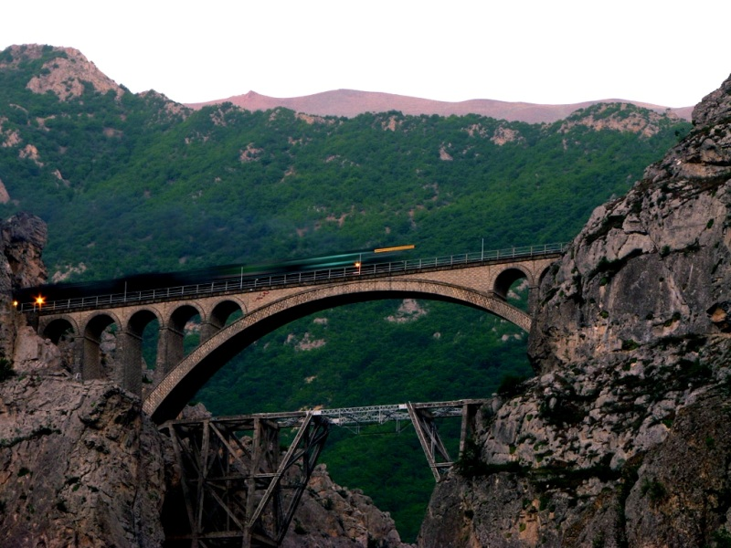
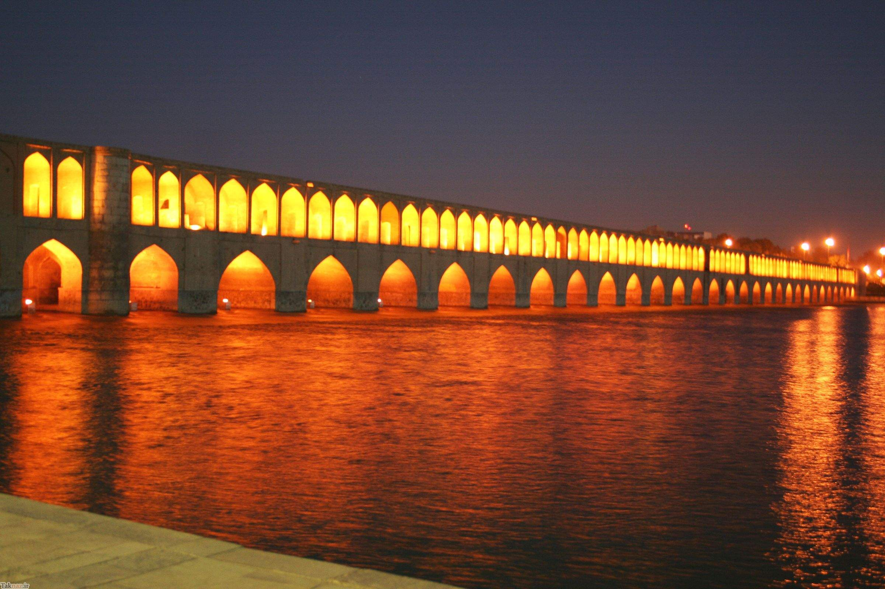
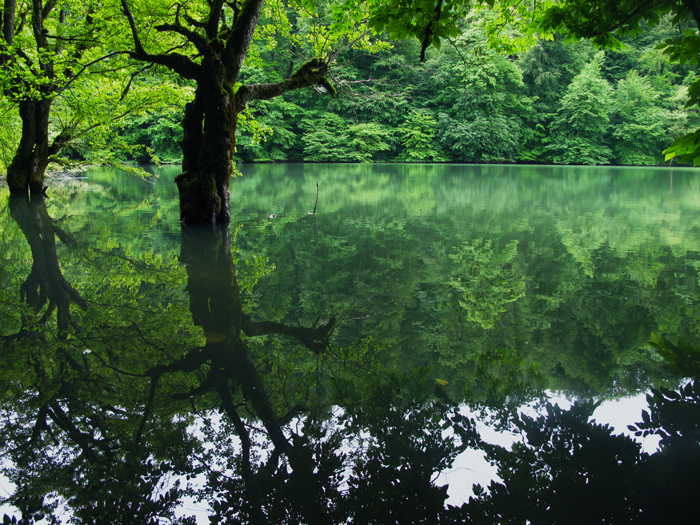
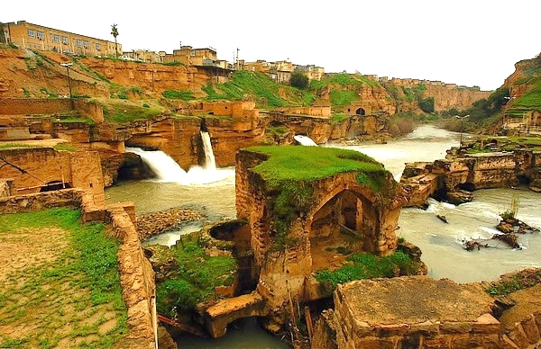
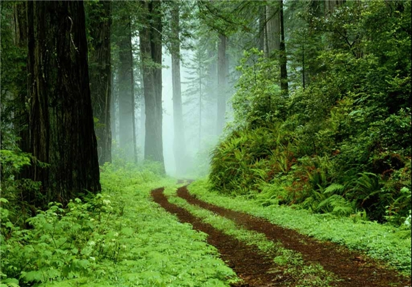
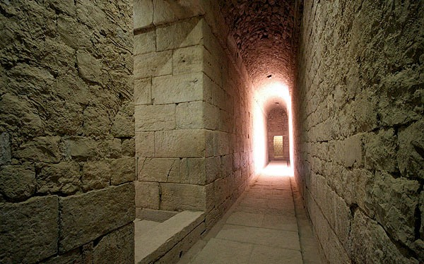
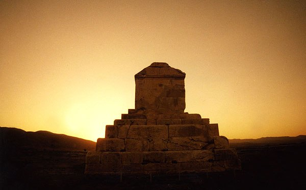
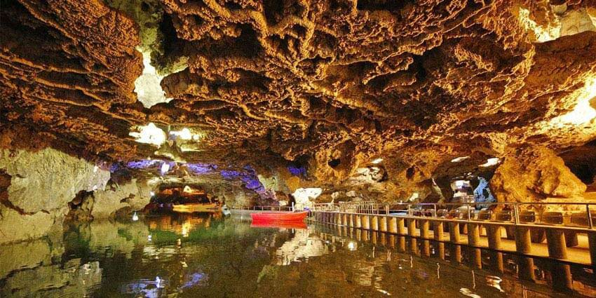
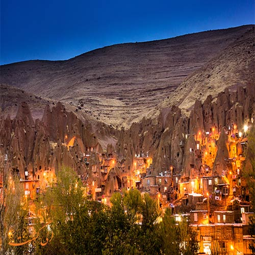
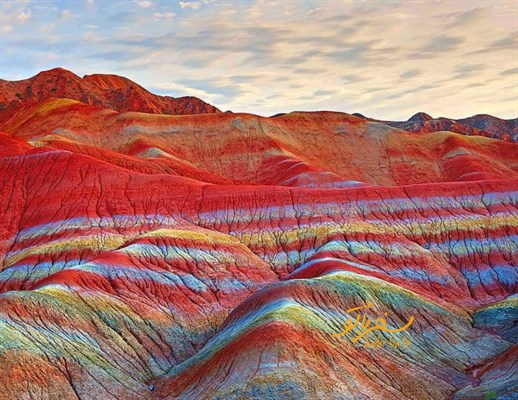

Let's review the most beautiful tourist attractions of Iran that you must visit.

Veresk bridge

33 bridge

Lake Chort

Shushtar waterfalls

Gisum Forest Park

Anahita Temple

Tomb of Cyrus the Grea

Ali Sadr Cave

Kandovan village

Hormoz island
Of course, Iran's tourist attractions are much more than the above, which we have not mentioned in the rest